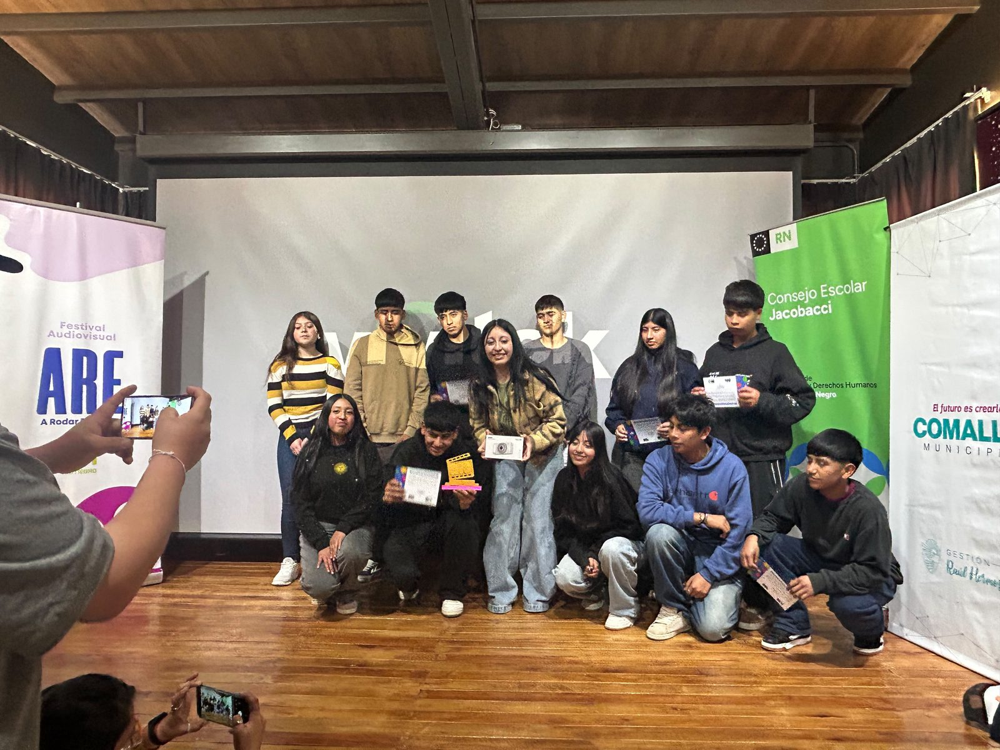
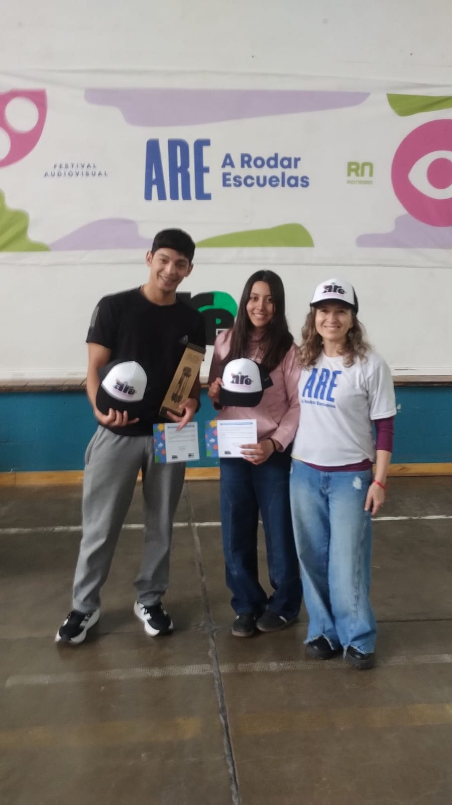

Durante 2026, la ESRN Rural Virtual participó en el programa provincial A Rodar Escuelas con dos cortometrajes. Las producciones formaron parte de las propuestas desarrolladas en el marco del Taller de Creaciones Audiovisuales, un espacio que promueve la expresión, la creatividad y el trabajo colectivo a través del lenguaje audiovisual.
Raíces que sueñan, realizado por estudiantes de Cona Niyeu, participó del encuentro zonal realizado en Sierra Grande, compartiendo su producción con otras escuelas de la zona; recibieron certificado por su participación y un trípode para su sede. Acá me quedo, producido por estudiantes de Laguna Blanca, fue presentado en Comallo y recibió una Mención Especial del Jurado, reconocimiento que incluyó certificados para sus realizadores, un trípode y una cámara digital para la sede.
Ambos cortometrajes abordan con sensibilidad y profundidad temas vinculados a la identidad, el arraigo y el sentido de pertenencia, poniendo en valor las historias, los paisajes, las comunidades y las experiencias de las juventudes que habitan el territorio rural rionegrino.

A continuación, compartimos estas dos producciones audiovisuales realizadas íntegramente por estudiantes de la ESRN Rural Virtual.
Raíces que sueñan
Raíces que sueñan · Cona Niyeu
Raíces que sueñan es una producción audiovisual realizada por estudiantes de Cona Niyeu que invita a recorrer la vida de la comunidad donde la memoria, las tradiciones y la educación se entrelazan. A través de sus propias voces e imágenes, el corto retrata la riqueza cultural del territorio, el valor de las raíces y los sueños de una juventud que construye su futuro sin olvidar de dónde viene.
Acá me quedo
Acá me quedo · Laguna Blanca
Acá me quedo es un relato audiovisual creado por estudiantes de Laguna Blanca que recupera la historia de su escuela y reflexiona sobre el presente de las nuevas generaciones. A través de sus propias voces, imágenes y experiencias, el cortometraje pone en valor la identidad, el arraigo y el sentido de pertenencia, destacando el papel de la ESRN Rural Virtual como una oportunidad para estudiar, crecer y proyectar un futuro sin tener que abandonar el lugar donde están sus raíces, sus familias y su comunidad.